From your event's brand to an app that shows it, event by event and language by language.
The result
Each event shows your colours, fonts, home screen and pages, the app's texts carry your wording, and installed apps pick it all up with no new build.
Make the app look like your event · 0:42App Studio, redrawn and animated from its code. Phone: the app in App Studio's preview, with sample content, October 2026.
Who does what
Your moveYou set the look in App Studio's Look sections: Colours & fonts, Home screen, Custom pages and Translations.
Our team is on itYour ExpoPlatform team sets what App Studio leaves to them, such as the design style, the tab bar style and the languages Translations offers.
Before you start, have ready
Your brand colours as #RRGGBB codes, for light and for dark.
Pictures as PNG or JPEG files of up to 10 MB, each side at least 200 px: the sign-in pictures, the loading backdrop, the home's header picture and your logo.
A header video if you want one: an MP4 of up to 50 MB.
The words for the top of each event's home, in English first, then in DE, FR, ES, IT or RU as you need.
Each page's title and text, in English first.
The app texts you want in your own words, for each language.
Stage 1 of 6
Know what you set, and for which event
App Studio keeps each setting at one level: for one event, for one language, or once for the whole app. In an app with several events, you pick the event first and set it again for every event that needs it.
1
Decide what each event needs: colours, fonts, the home screen and pages are set event by event.
Your move
Set for each event
Colours, light and dark, fonts, pictures and the missing-picture choice
The home screen's layout, top bar, header, blocks and badge pictures
Custom pages, each with its tabs and blocks
The same for every event
Designed home screen, on or off
The event picker's colours and fonts, in apps with several events
Your wording in Translations, kept per language
Texts are kept per language too: the home's header and block texts, and each page's title, tab names, texts and HTML.
Watch out
You will not find the design style, the tab bar style or whether people may pick their own style in App Studio: your ExpoPlatform team sets them, so ask your ExpoPlatform contact.
Done when: You know what to set for each event, and what is the same for every event.
Stage 2 of 6
Set each event's colours and fonts
Each event has its own colours, fonts and pictures, with a light colour set and a separate dark one. Colours & fonts and Name, icon & splash share one draft and one Save changes.
2
In Colours & fonts, keep Light on and set the event's brand colours, or start from a palette.
Your move
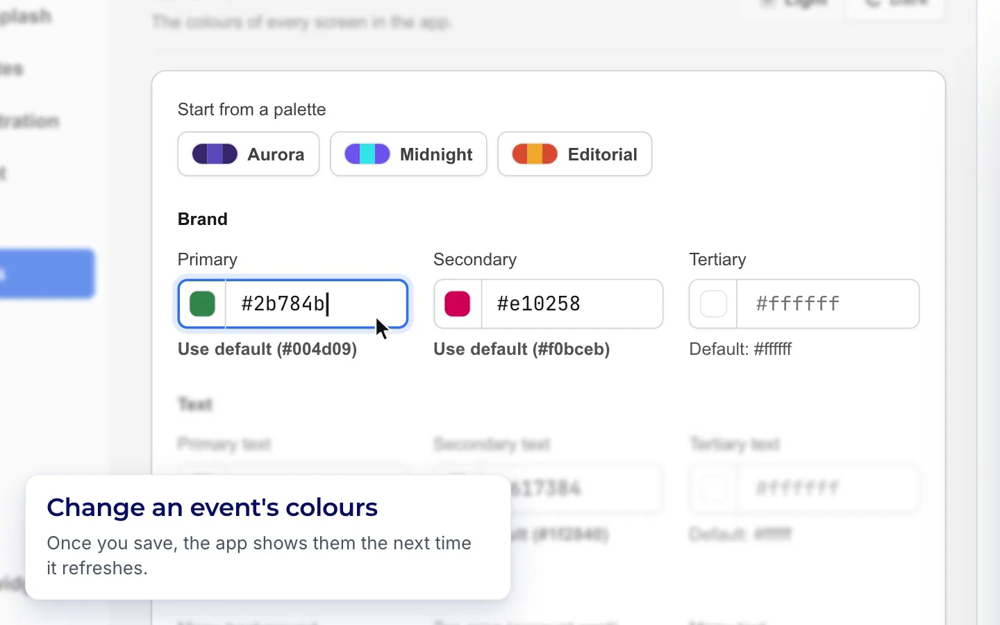
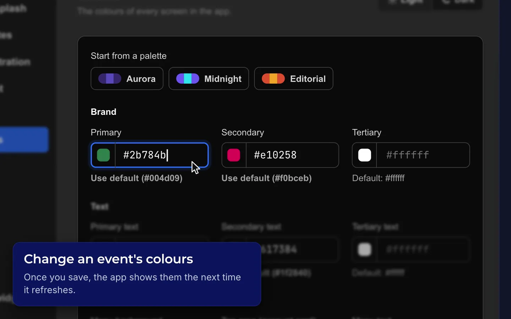
Primary typed in under Brand, below the palettes; the phone shows the colour.App Studio, redrawn and animated from its code. Phone: the app in App Studio's preview, with sample content, October 2026.Whole film
A palette fills all 21 colours of the scheme you are on, as a one-time fill you then adjust.
Watch out
With several events, pick the event in the Colours header first: each event has its own colours.
Each colour must be a #RRGGBB code, or nothing is saved when you press Save changes.
Done when: Each colour you set shows Use default under it.
3
Press Dark at the top of Colours, and set only the colours that should differ in dark mode.
Your move
Colours
“In dark mode, a colour you leave empty uses its light one.”
Drawing based on App Studio's code: Colours, with Dark on
The phone preview turns dark with it, and each empty field shows the light colour it falls back to.
Watch out
A palette fills the scheme you are on: press Dark first to fill the dark set with one.
Done when: With Dark on, the phone preview is dark too, and the fields hold your dark colours.
4
Choose the fonts under Fonts and the pictures under Pictures, then press Save changes.
Your move
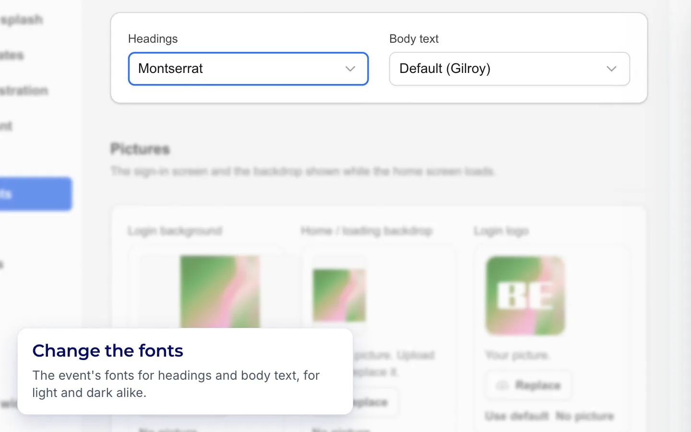
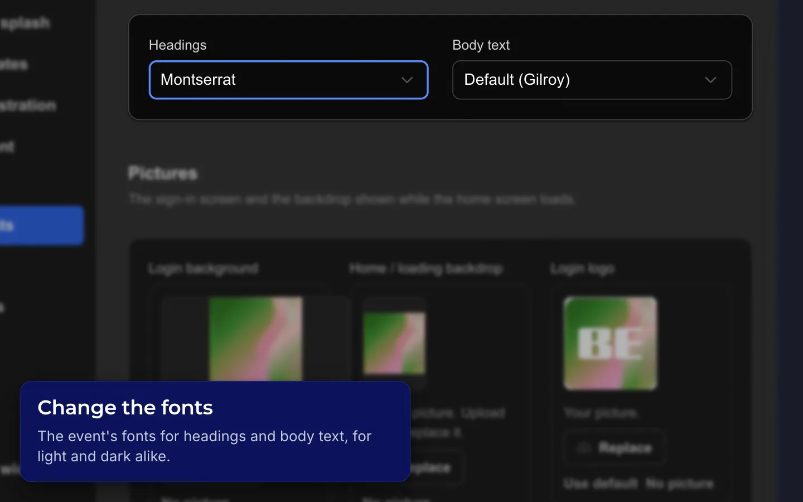
Headings opened and Montserrat chosen; Body text keeps its default, Gilroy.App Studio, redrawn and animated from its code.Whole film
One Save changes saves the whole draft: every event's colours, fonts and pictures, and Name, icon & splash too.
Watch out
In an app with several events, colour the screen where people choose an event in the Event picker block, above Colours: it is one set for the whole app.
A picture is stored as soon as you upload it, but the app uses it only after Save changes.
Each picture under Pictures must be a PNG or JPEG of up to 10 MB, with each side at least 200 px.
Done when: You pressed Save changes, and a green message confirmed it.
Stage 3 of 6
Design each event's home screen
Each event has its own home, saved with Save home screen, which does not save Colours & fonts. The phone preview runs it with your unsaved edits, on sample content.
5
In Home screen, switch Designed home screen on, and pick the event if your app has several.
Your move
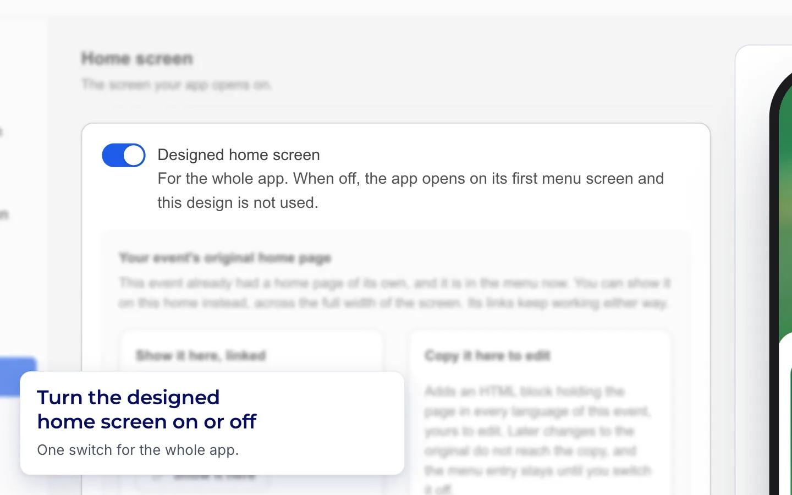
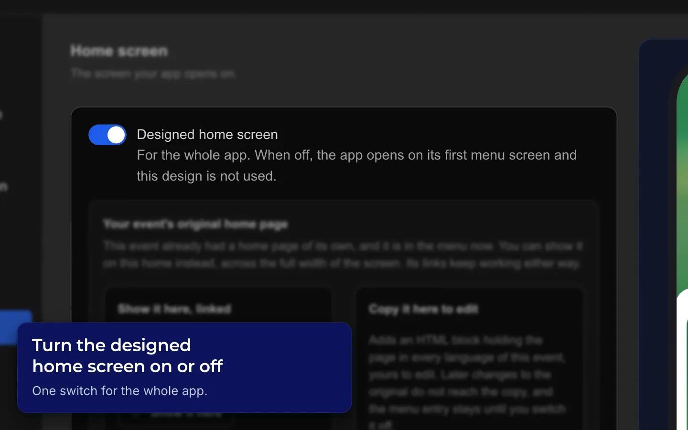
Designed home screen at the top of Home screen, then the home it opens on.App Studio, redrawn and animated from its code. Phone: the app in App Studio's preview, with sample content, October 2026.Whole film
It is one switch for the whole app: “When off, the app opens on its first menu screen and this design is not used.”
Watch out
A new app starts with this switch off, unless it was copied from an app where it is on: check it before you design.
Done when:Designed home screen is on, and the phone preview, started on Home, opens on the designed home.
6
Choose the event's Layout, then what the Top bar shows: its top-right button, the search and the event name.
Your move
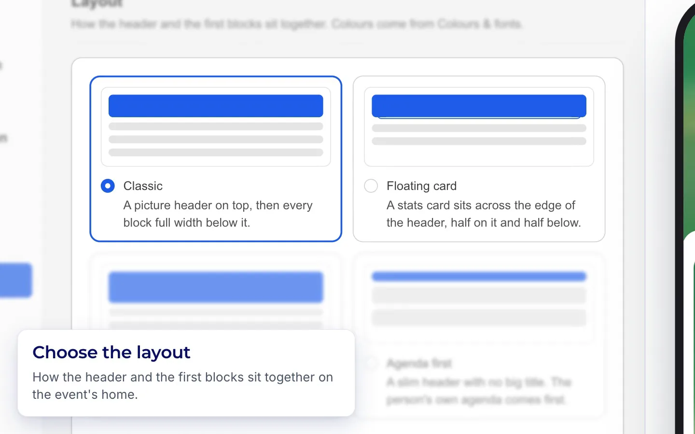
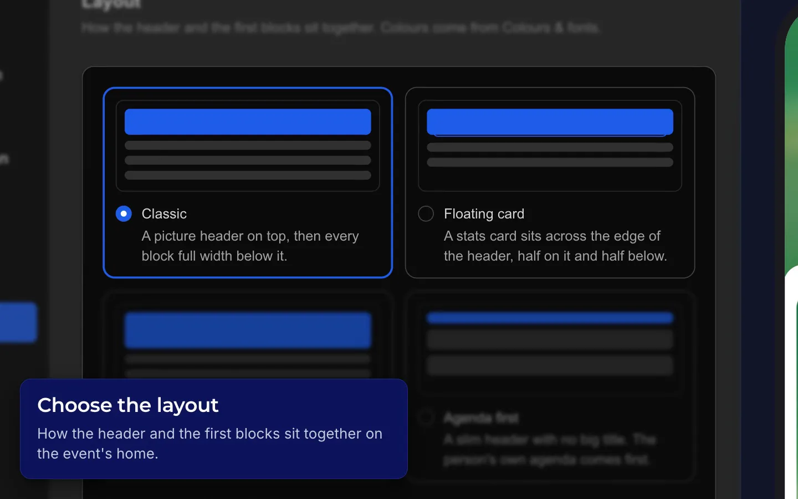
Layout's choices with Classic chosen, then the phone showing the header and first block.App Studio, redrawn and animated from its code. Phone: the app in App Studio's preview, with sample content, October 2026.Whole film
Layouts carry no colours of their own: “Colours come from Colours & fonts.”
Watch out
An AI assistant button in the top right appears only once the assistant is ready for this event: follow Preparation on the AI Synapsium block, the home's button into the assistant.
Whether the AI assistant is switched on for your app at all is your ExpoPlatform team's choice: ask your ExpoPlatform contact.
Done when: The phone preview shows the layout and the top bar you chose.
7
Under Header, write the line above the title and the title, pressing each language button you need.
Your move
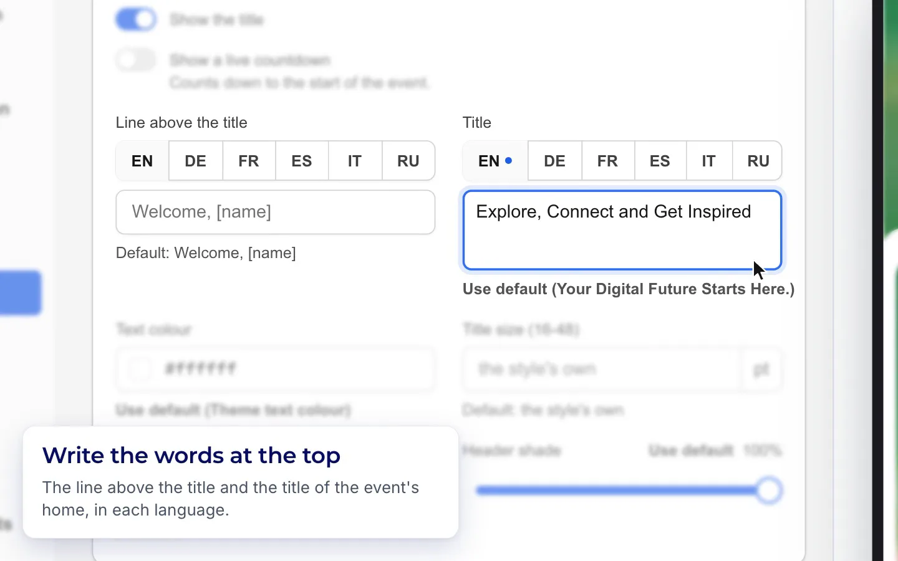
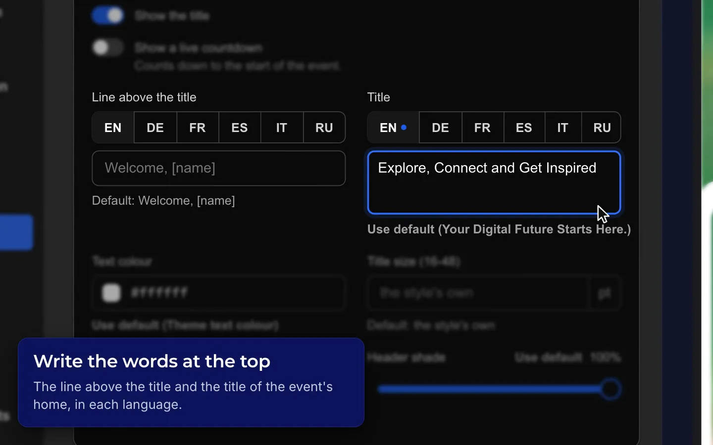
Header: the Title typed in English, then the phone showing it over the header.App Studio, redrawn and animated from its code. Phone: the app in App Studio's preview, with sample content, October 2026.Whole film
A text you leave empty uses the default: “Welcome, [name]” above the title, and “Your Digital Future Starts Here.” as the title.
Watch out
A line written in DE, FR, ES, IT or RU needs an English text too, or the save is refused.
The line above the title and the title each hold up to 200 characters.
Done when: A dot marks each language that has a text.
8
Under Header picture, add a picture or a video and your logo, and set the tint over the picture or video.
Your move
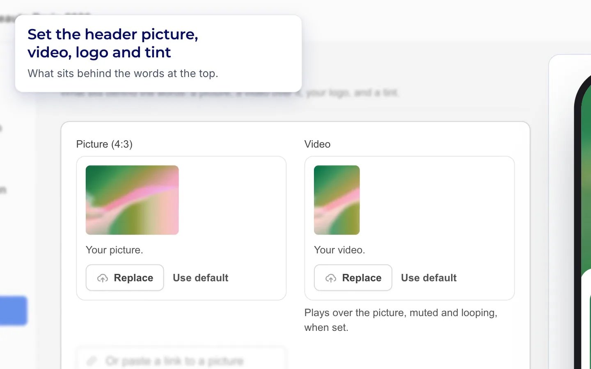
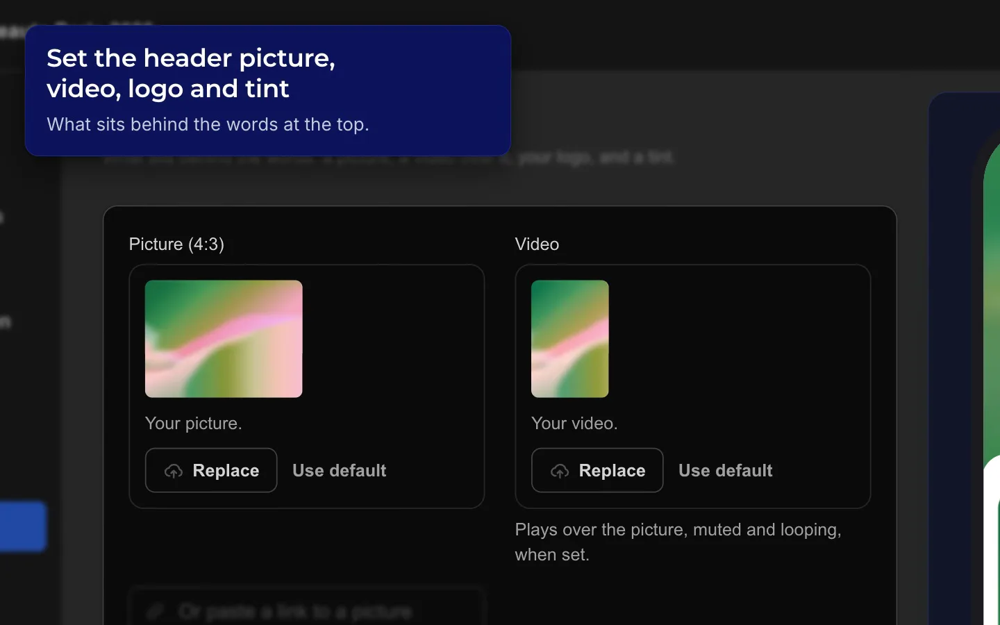
Header picture: Picture (4:3) and Video, then Logo over the picture and Tint over the picture.App Studio, redrawn and animated from its code.Whole film
The tint lies over the picture or video and keeps the words readable.
Watch out
Tint over the picture stays greyed until there is a picture or a video: add one first.
Pictures and the video are stored as soon as you upload them, and the home uses them after Save home screen.
The picture, the logo and the Badge pictures (Badge header, Badge background, Sponsor) must each be a PNG or JPEG of up to 10 MB, the picture and the logo with each side at least 200 px, and the video an MP4 of up to 50 MB.
Done when:Picture (4:3) or Video shows yours, with Replace and Use default under it.
9
Add, order and switch the home's blocks, choose who sees each, then press Save home screen.
Your move
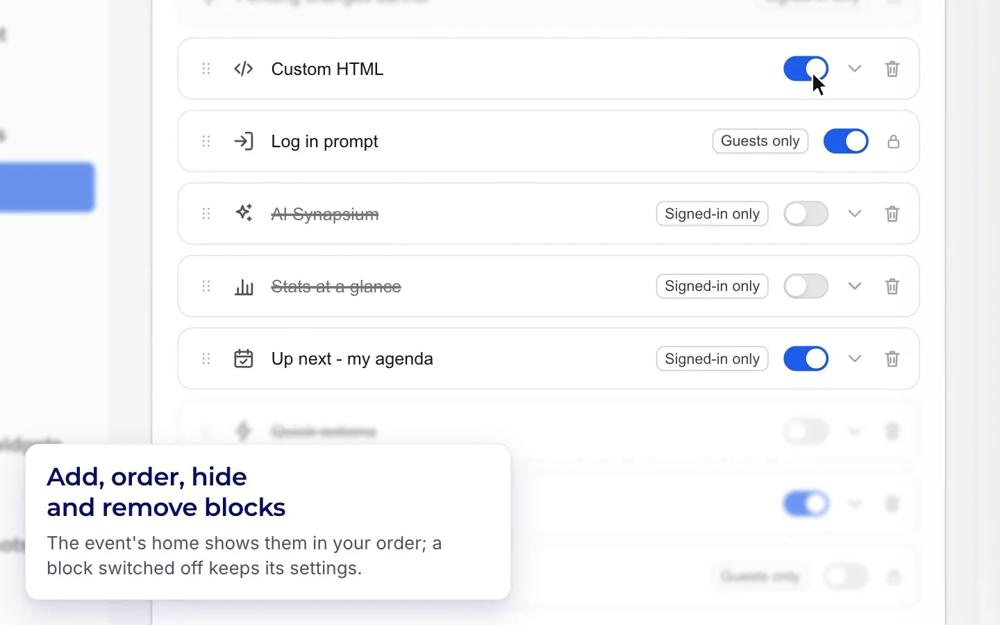
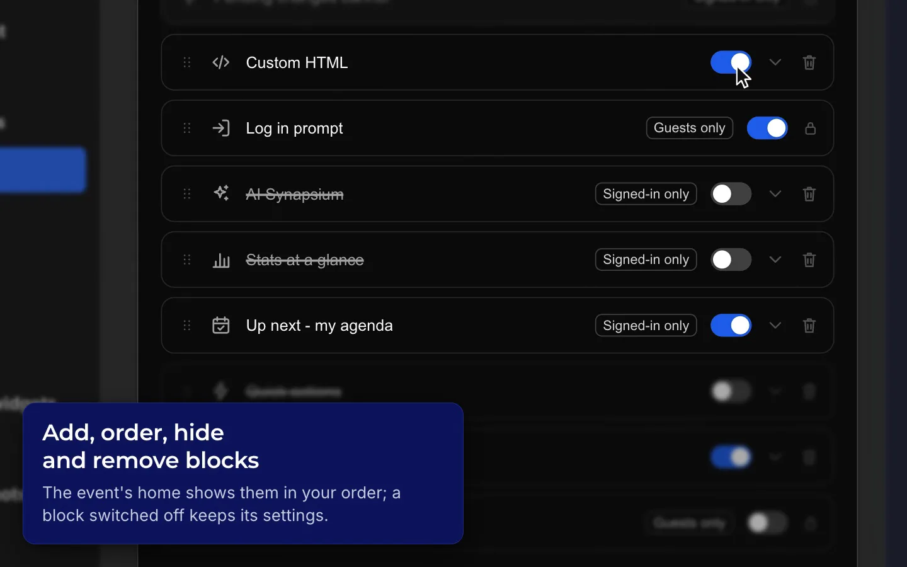
A block dragged by its handle, and Custom HTML switched off and on again.App Studio, redrawn and animated from its code.Whole film
Save home screen saves in one go the home of every event you edited since the last save; an Image row takes pictures of up to 10 MB, and a Hero banner a PNG or JPEG picture of up to 10 MB and an MP4 video of up to 50 MB.
Watch out
The bin takes a block off the list at once, without asking: to hide a block and keep its settings, switch it off instead.
Restore the default home is saved straight away, without Save home screen: “Every change to this home will be lost.”
To give people a panel on their phone's own home screen, use Home-screen widgets, not blocks: switching a widget on or off needs a new build.
Done when: App Studio says “Content saved — live on the next app fetch”.
Stage 4 of 6
Add pages of your own
A page you write in Custom pages belongs to one event, with up to 10 tabs and 60 blocks, and an event holds at most 30 pages. A saved page needs no new build.
10
In Custom pages, press New page, then Write a page, and give the page a title and blocks.
Your move
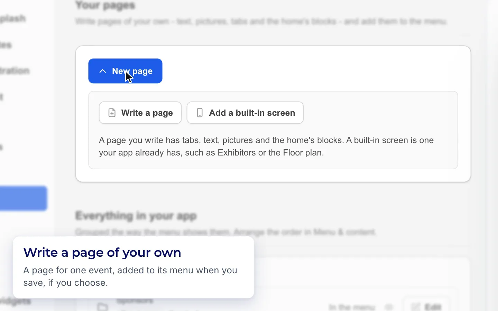
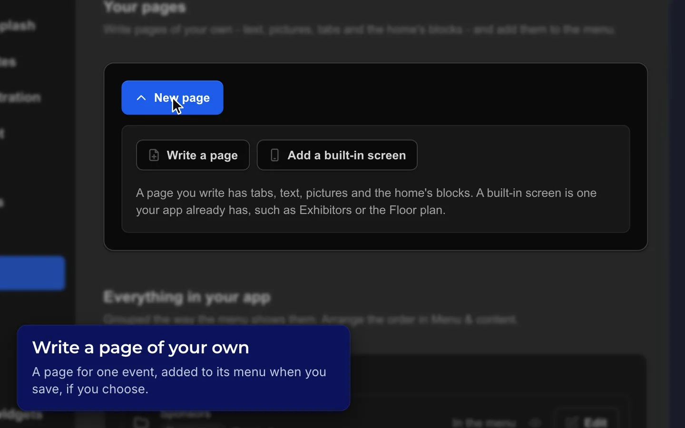
New page opens on its two choices, Write a page and Add a built-in screen.App Studio, redrawn and animated from its code.Whole film
Besides Text, a page takes most of the Home screen's blocks, with the same settings; the page's title and each tab's name take up to 40 characters, and a tab's background picture must be a PNG or JPEG of up to 10 MB.
Watch out
Each page belongs to one event: with several events, pick the event beside Your pages first.
You can have one unsaved page per event, kept only in this browser tab until Save page (closing the tab loses it): if another page of this event has unsaved changes, that page opens instead of a new one.
Who sees it decides what the app shows but does not protect the page: “everything on a page can be read by anyone who has your app.”
Done when: The save bar lists nothing to fix.
11
Under Language you are writing in, press another language, and write the title, tab names and text in it.
Your move
Custom pages
Page
Title (English)
Language you are writing inENDEFRESITRU
Add to the menu when saved
Drawing based on App Studio's code: A new page: its Title, the language buttons, and Add to the menu when saved, which starts switched on.
As App Studio's hint says, “English shows wherever a language is left empty.”
Watch out
The title, and any tab you name, need English, and every Text block English text or a picture: write the page in English first.
Your own HTML is written per language, so write it, links included, in each language.
Done when: In each language you need, no Text block's row says it has no text in that language.
12
Press Save page, then arrange the page's place in the menu in Menu & content.
Your move
Custom pages
“Live on the next app refresh. No new build needed.”
Drawing based on App Studio's code: The save bar of a saved page, with nothing to fix
With Add to the menu when saved on, a new page goes to the end of the Event section of the event's menu.
Watch out
If Menu & content is already open in another tab, reload it before you save there, or its save takes the page out of the menu again.
A page saved with Add to the menu when saved off is listed under Not in the menu: press Add to menu there.
Done when: App Studio confirms with the page's English title, then “added to Event — live on the next app refresh”, or “saved — it is not in the menu yet” with Add to the menu when saved off.
Stage 5 of 6
Put the app's texts in your words
Translations holds the app's own texts. Your wording replaces the standard text, language by language, for every event of the app.
13
In Translations, choose the Language, find the text, type your wording beside it, and save.
Your move
Translations
“Change any text the app shows, in each language. Leave a field empty to keep the standard text. No new build is needed.”
Drawing based on App Studio's code: The line under Your app's texts
No build is started: “Installed apps pick up saved texts within about 30 minutes.”
Watch out
Sign-in and registration button texts and menu names are not here: word them per event in Sign-in & registration and Menu & content.
Language is locked while you have unsaved changes: save them, or undo them, before you switch.
Each text takes up to 10,000 characters: the field does not stop you there, but a longer text does not save.
Done when: App Studio says “Saved. Installed apps pick the texts up within about 30 minutes.”
14
Tick Changed only to list the texts that carry your wording, and check each language you offer.
Your move
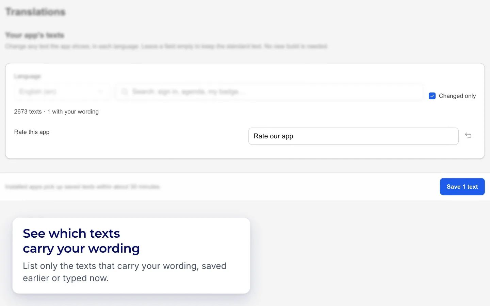
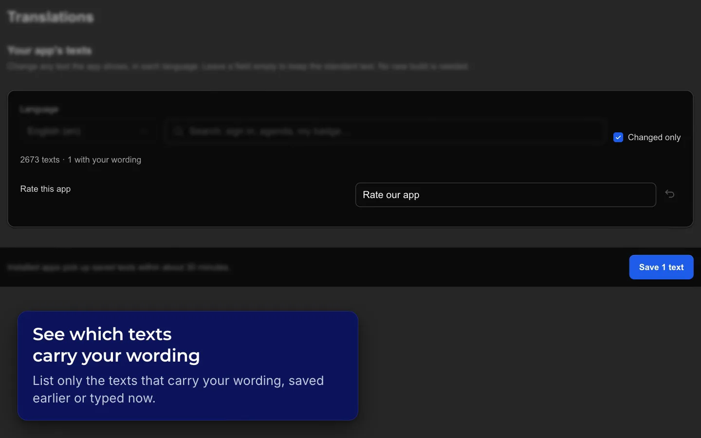
Changed only ticked: the list keeps “Rate this app”, typed as “Rate our app”.App Studio, redrawn and animated from its code.Whole film
Your wording is kept per language, so each language is checked and changed on its own.
Watch out
If Language does not list a language you need, ask your ExpoPlatform contact: your ExpoPlatform team switches languages on.
A text a language lacks reads “No standard text”, and the app shows the English text there unless you type your own wording.
Done when: The count line under the search box says how many texts carry your wording.
Stage 6 of 6
Check it, and see it reach phones
The phone preview runs the app with your unsaved settings, on sample content. Once saved, your look reaches installed apps with no new build.
15
In the phone preview, check each event in light and dark, and, on Home, as a signed-in person and a guest.
Your move
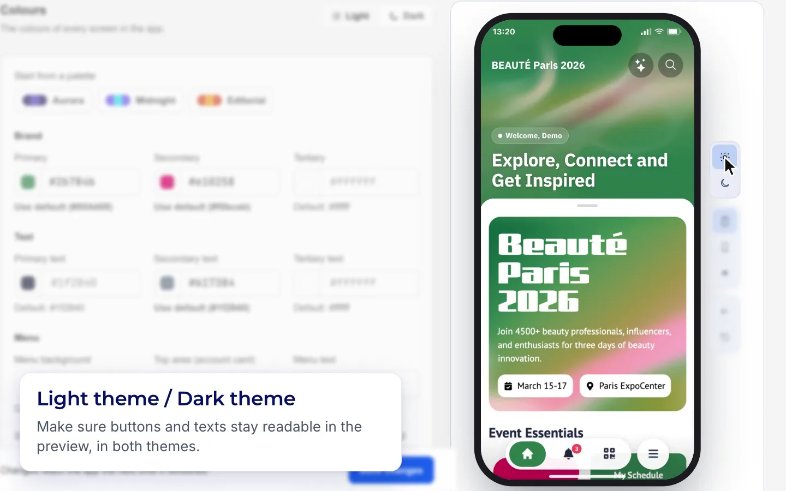
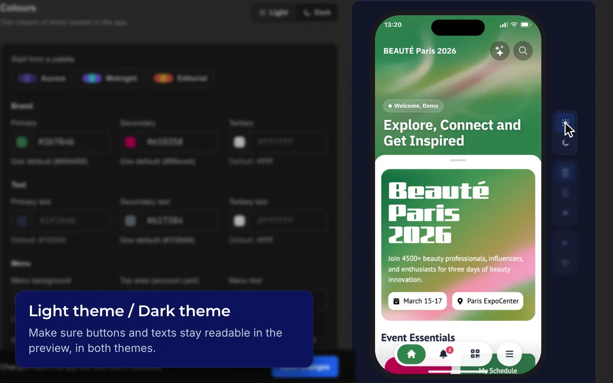
The sun beside the phone turns the preview, and the Colours form, back to light.App Studio, redrawn and animated from its code. Phone: the app in App Studio's preview, with sample content, October 2026.Whole film
With several events, the preview follows the event you pick in Home screen or Custom pages.
Watch out
App Studio checks only Tertiary on Primary, so check that every other button and text stays readable, in both themes.
After Use default, the preview keeps showing the saved colour, font or picture until you save.
Translations has no preview: installed apps show your saved wording within about 30 minutes.
Done when: Each event reads well in light and dark, for guests and for signed-in people.
16
Keep the look up to date: what you save reaches installed apps with no new build.
Your move
At the next refresh
Colours, fonts and pictures, after Save changes
The home screen, after Save home screen
Custom pages, after Save page
Within about 30 minutes
Your wording, after the save button in Translations
The app checks for new texts at most once every 30 minutes
Most sections say it in their save bar: “Changes reach the app the next time it refreshes.”
Watch out
Save changes also saves Name, icon & splash: its icon, the name under the icon (in store builds, the store name) and the splash picture and colour reach phones only after the next build is installed.
Done when: You know when each change reaches installed apps: once a build of this app is installed, it shows your look after its next refresh, and your wording within about 30 minutes.
Something's wrong?
Pick what you see.
Why: The Tertiary colour on your Primary colour has a contrast below 4.5:1.
What to do: Press the button beside it, which reads Use and a darker colour's code, or change Primary or Tertiary; the note is advice, and saving is not blocked.
Why:Designed home screen is off (“When off, the app opens on its first menu screen and this design is not used.”), or the Preview strip below the form starts the preview on My Badge or on Boot flow, which walks through the splash, login and choose event.
What to do: Switch Designed home screen on and press Save home screen, or choose Home in the Preview strip.
Why: It was saved with Add to the menu when saved off, or a save in Menu & content, open in another tab, took it out.
What to do: Press Add to menu under Not in the menu; if App Studio says “The Event section is full”, make room in that section, or place the page in another section, in Menu & content.
Why: A phone with a build of this app installed picks up saved texts within about 30 minutes, and your wording is kept per language.
What to do: Allow about 30 minutes, check on a phone with a build of this app installed, and set your wording in each language people use; if App Studio said texts could not be saved, press the save button again.